library(dplyr)Regresión
La siguiente técnica que vamos a probar sobre nuestro conjunto de datos es la de regresión. Consiste en estudiar la relación entre una variable dependiente y una o varias variables explicativas, de modo que después se puedan hacer predicciones en base a estos resultados.
data_reg <- read.csv("train.csv")
attach(data_reg)Buscando relaciones
Para empezar, vamos a intentar buscar relaciones entre variables, para ver qué atributos podemos añadir al modelo. Para ello, vamos a quitar en principio las variables binarias para simplificar las vistas.
data_reg2 <- data_reg
data_reg2$name..username <- NULL
data_reg2$profile.pic <- NULL
data_reg2$external.URL <- NULL
data_reg2$private <- NULL# matriz de diagramas de dispersión
pairs(data_reg2)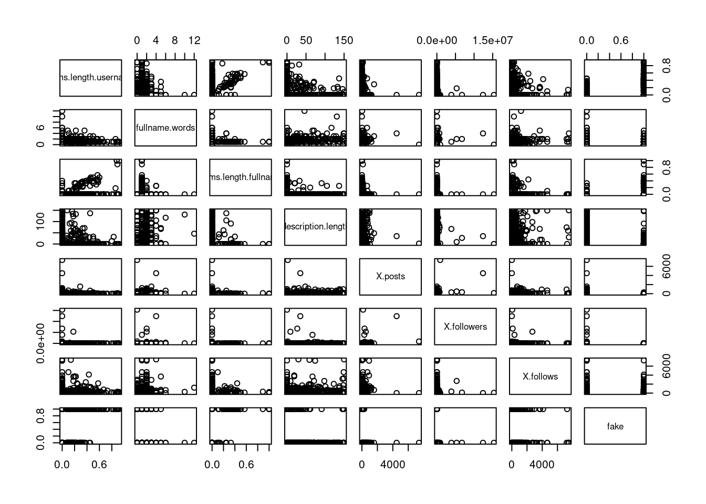
En este diagrama podemos ver ciertas relaciones. Por ejemplo, se observa cierta linealidad entre nums.length.username y nums.length.fullname. Sin embargo, no se aprecian relaciones completamente concluyentes para ningún atributo. Esto es posible que se deba a que haya muchos outliers o que simplemente no tenga relación entre si, lo cual comprobaremos una vez hayamos construido los modelos.
# matriz de correlación
cor(data_reg2) nums.length.username fullname.words nums.length.fullname
nums.length.username 1.00000000 -0.22547213 0.40856654
fullname.words -0.22547213 1.00000000 -0.09434799
nums.length.fullname 0.40856654 -0.09434799 1.00000000
description.length -0.32117027 0.27252216 -0.11752105
X.posts -0.15744211 0.07335018 -0.05771550
X.followers -0.06278509 0.03322460 -0.02703471
X.follows -0.17241327 0.09485496 -0.06797109
fake 0.58768653 -0.29879258 0.24678210
description.length X.posts X.followers X.follows
nums.length.username -0.321170271 -0.15744211 -0.062785090 -0.17241327
fullname.words 0.272522165 0.07335018 0.033224604 0.09485496
nums.length.fullname -0.117521050 -0.05771550 -0.027034712 -0.06797109
description.length 1.000000000 0.14482370 0.005929455 0.22656142
X.posts 0.144823702 1.00000000 0.321385480 0.09822504
X.followers 0.005929455 0.32138548 1.000000000 -0.01106599
X.follows 0.226561422 0.09822504 -0.011065994 1.00000000
fake -0.460824593 -0.24535515 -0.093688783 -0.22483522
fake
nums.length.username 0.58768653
fullname.words -0.29879258
nums.length.fullname 0.24678210
description.length -0.46082459
X.posts -0.24535515
X.followers -0.09368878
X.follows -0.22483522
fake 1.00000000Aquí vemos la matriz de correlación, que indica cómo de relacionado está cada atributo con todos los demás. Los resultados tampoco son demasiado buenos, pues, aunque hay atributos que muestran cierta relación, no son de manera demasiado significativa en general.
Un primer modelo simple
Para empezar, vamos a crear un modelo para poder predecir la relación entre el número de seguidores y seguidos.
# Generamos el modelo
model <- lm( formula = X.followers ~ X.follows , data = data_reg)
summary(model)
Call:
lm(formula = X.followers ~ X.follows, data = data_reg)
Residuals:
Min 1Q Median 3Q Max
-90885 -90167 -87723 -82523 15248322
Coefficients:
Estimate Std. Error t value Pr(>|t|)
(Intercept) 90884.99 43393.91 2.094 0.0367 *
X.follows -10.97 41.38 -0.265 0.7910
---
Signif. codes: 0 '***' 0.001 '**' 0.01 '*' 0.05 '.' 0.1 ' ' 1
Residual standard error: 910900 on 574 degrees of freedom
Multiple R-squared: 0.0001225, Adjusted R-squared: -0.001619
F-statistic: 0.0703 on 1 and 574 DF, p-value: 0.791Lo primero que llama la atención es un p-value excesivamente alto, además de que se nos indica que no hay relación entre el número de seguidores y seguidos.
# Lo visualizamos
plot(X.follows, X.followers)
abline(model)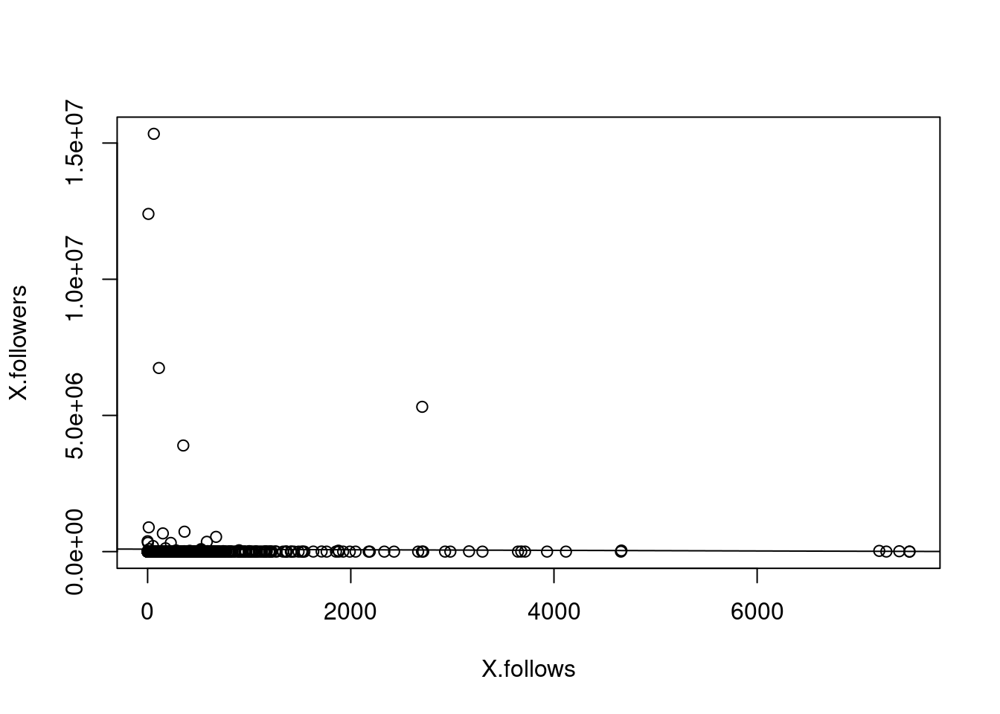
Como podemos ver, los puntos con una gran cantidad de seguidores distorsionan los resultados. Vamos a eliminarlos, pues.
data2 <- data_reg %>%
filter(X.followers<4000)
model2 <- lm( formula = X.followers ~ X.follows , data = data2)
summary(model2)
Call:
lm(formula = X.followers ~ X.follows, data = data2)
Residuals:
Min 1Q Median 3Q Max
-1359.6 -233.1 -191.8 4.2 3473.6
Coefficients:
Estimate Std. Error t value Pr(>|t|)
(Intercept) 233.43628 28.07136 8.316 7.81e-16 ***
X.follows 0.33455 0.03022 11.071 < 2e-16 ***
---
Signif. codes: 0 '***' 0.001 '**' 0.01 '*' 0.05 '.' 0.1 ' ' 1
Residual standard error: 560.5 on 527 degrees of freedom
Multiple R-squared: 0.1887, Adjusted R-squared: 0.1871
F-statistic: 122.6 on 1 and 527 DF, p-value: < 2.2e-16# Lo visualizamos
plot(data2$X.follows, data2$X.followers)
abline(model2)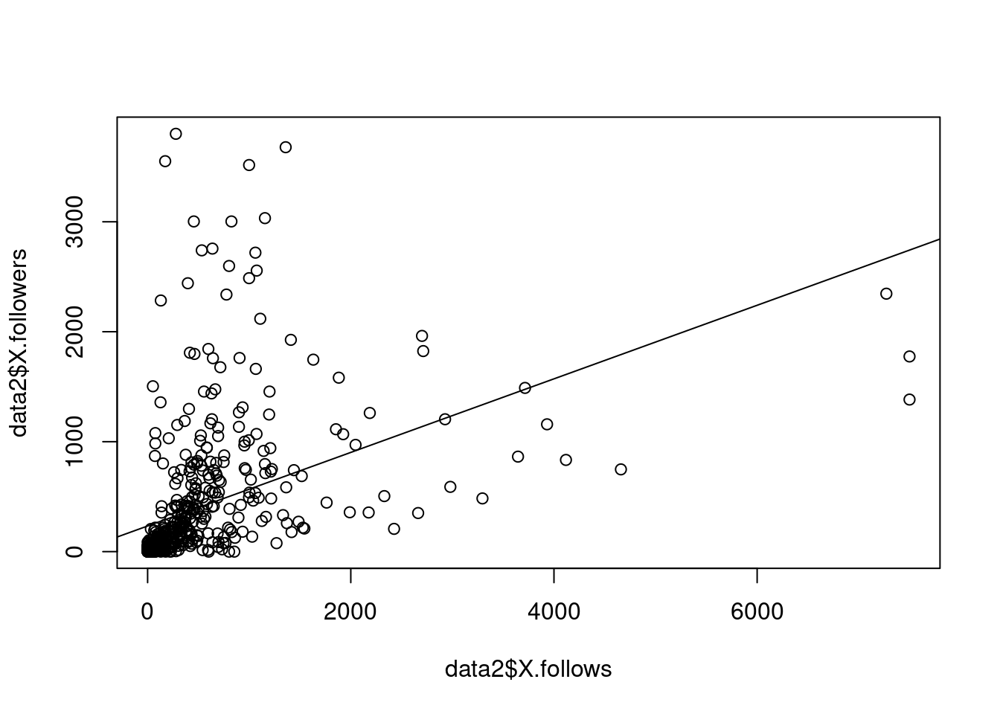
Estos resultados parecen más fiables. Para asegurarnos de ellos, vamos a estudiar algunos valores del modelo.
plot(model2)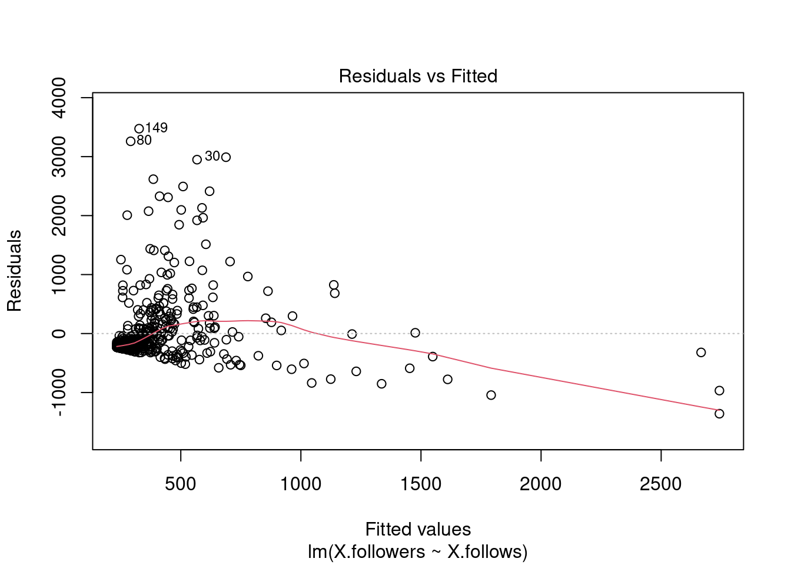
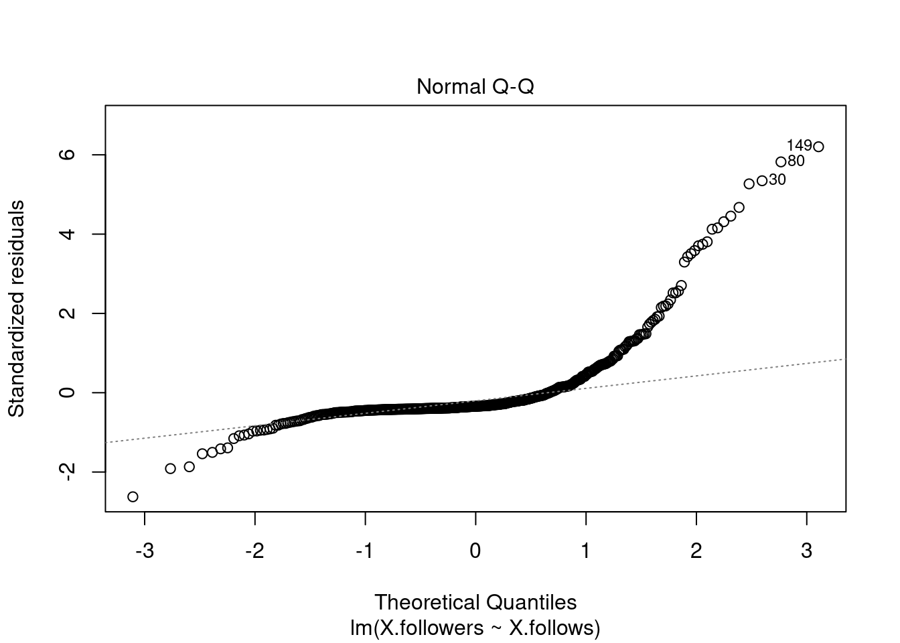
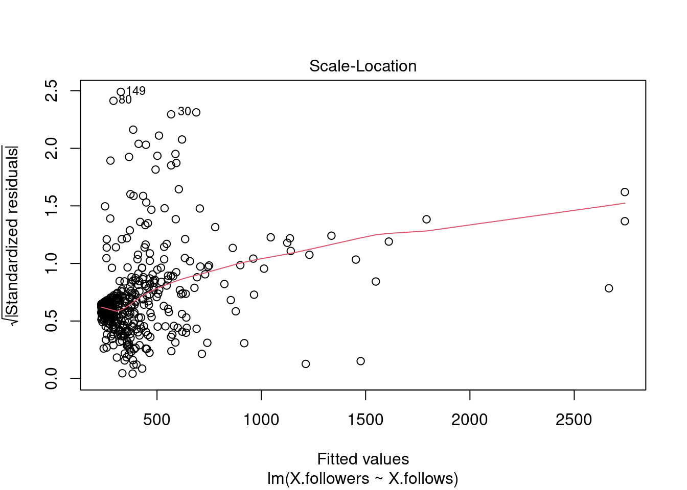
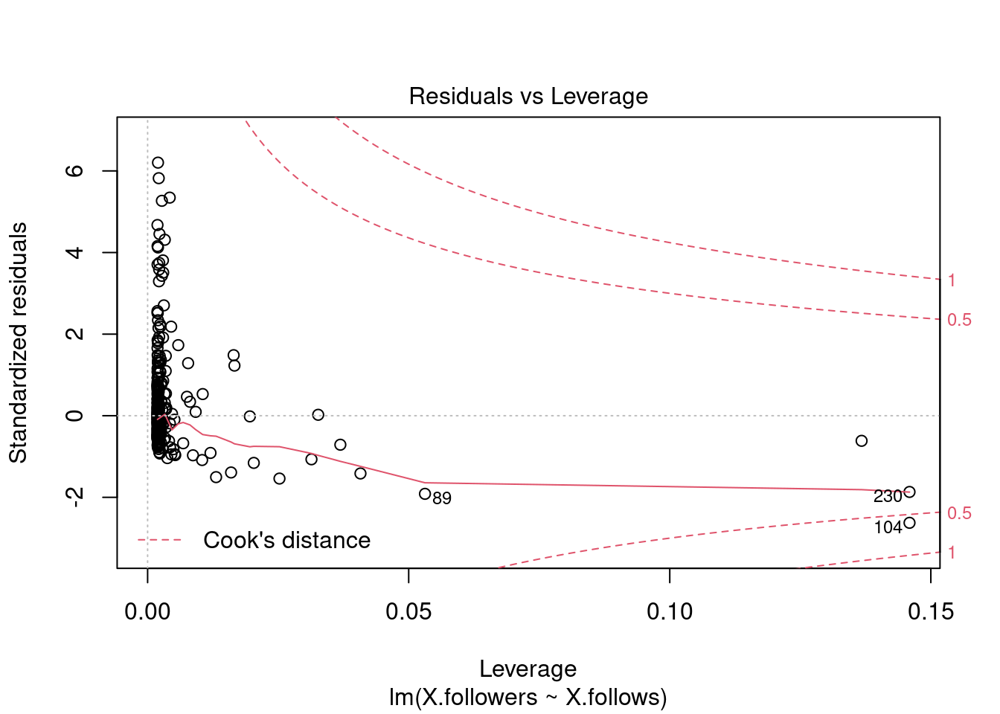
Para la primera y la tercera gráfica, donde vemos Residuals vs. Fitted y Scale-Location, respectivamente, vemos que se distribuyen los puntos de forma algo aleatoria, lo cual es un signo positivo de que nuestro modelo hace bien su trabajo.
La segunda, Normal Q-Q, parece desviarse de lo esperado para los últimos valores.
Por último, en Residuals vs. Leverage, se nos informa de los puntos que tienen mayor influencia en el modelo. Además, se ve que sigue habiendo puntos que no son muestras fiables para el modelo, como el 89 y el 104.
Un modelo genérico
El siguiente modelo que voy a crear, va a ser entre el atributo fake y todos los demás, pues me interesa ver cuáles tienen más influencia en el modelo.
model3 <- lm( formula = fake ~ ., data = data_reg )
summary(model3)
Call:
lm(formula = fake ~ ., data = data_reg)
Residuals:
Min 1Q Median 3Q Max
-0.73096 -0.23729 -0.06653 0.24048 1.01052
Coefficients:
Estimate Std. Error t value Pr(>|t|)
(Intercept) 7.931e-01 3.798e-02 20.880 < 2e-16 ***
profile.pic -4.380e-01 3.345e-02 -13.094 < 2e-16 ***
nums.length.username 8.062e-01 7.522e-02 10.718 < 2e-16 ***
fullname.words -3.354e-02 1.333e-02 -2.516 0.012142 *
nums.length.fullname -2.775e-02 1.212e-01 -0.229 0.818988
name..username 2.241e-01 7.641e-02 2.933 0.003498 **
description.length -1.510e-03 4.342e-04 -3.478 0.000544 ***
external.URL -1.542e-01 4.800e-02 -3.213 0.001390 **
private -9.459e-03 2.843e-02 -0.333 0.739459
X.posts -9.094e-05 3.570e-05 -2.547 0.011120 *
X.followers -9.960e-09 1.539e-08 -0.647 0.517743
X.follows -1.850e-05 1.499e-05 -1.235 0.217530
---
Signif. codes: 0 '***' 0.001 '**' 0.01 '*' 0.05 '.' 0.1 ' ' 1
Residual standard error: 0.3166 on 564 degrees of freedom
Multiple R-squared: 0.6074, Adjusted R-squared: 0.5998
F-statistic: 79.33 on 11 and 564 DF, p-value: < 2.2e-16Vemos que las que más información aportan son profile.pic, nums.length.username y description.length, seguidas de name..username y external.URL.
Vamos a crear un segundo modelo solo con estas variables.
model4 <- lm( formula = fake ~ profile.pic + nums.length.username + description.length + name..username + external.URL, data = data_reg)
summary(model4)
Call:
lm(formula = fake ~ profile.pic + nums.length.username + description.length +
name..username + external.URL, data = data_reg)
Residuals:
Min 1Q Median 3Q Max
-0.71113 -0.24453 -0.07143 0.24282 0.98317
Coefficients:
Estimate Std. Error t value Pr(>|t|)
(Intercept) 0.7354681 0.0316443 23.242 < 2e-16 ***
profile.pic -0.4596554 0.0328023 -14.013 < 2e-16 ***
nums.length.username 0.8445023 0.0687052 12.292 < 2e-16 ***
description.length -0.0017381 0.0004285 -4.056 5.68e-05 ***
name..username 0.2314540 0.0733411 3.156 0.001685 **
external.URL -0.1731966 0.0477099 -3.630 0.000309 ***
---
Signif. codes: 0 '***' 0.001 '**' 0.01 '*' 0.05 '.' 0.1 ' ' 1
Residual standard error: 0.3196 on 570 degrees of freedom
Multiple R-squared: 0.5956, Adjusted R-squared: 0.592
F-statistic: 167.9 on 5 and 570 DF, p-value: < 2.2e-16Vemos que tiene un p-value bajo, pero el valor de R-square parece no ser demasiado alto. De todos modos, vamos a visualizar más información de este modelo para determinar su utilidad.
plot(model4)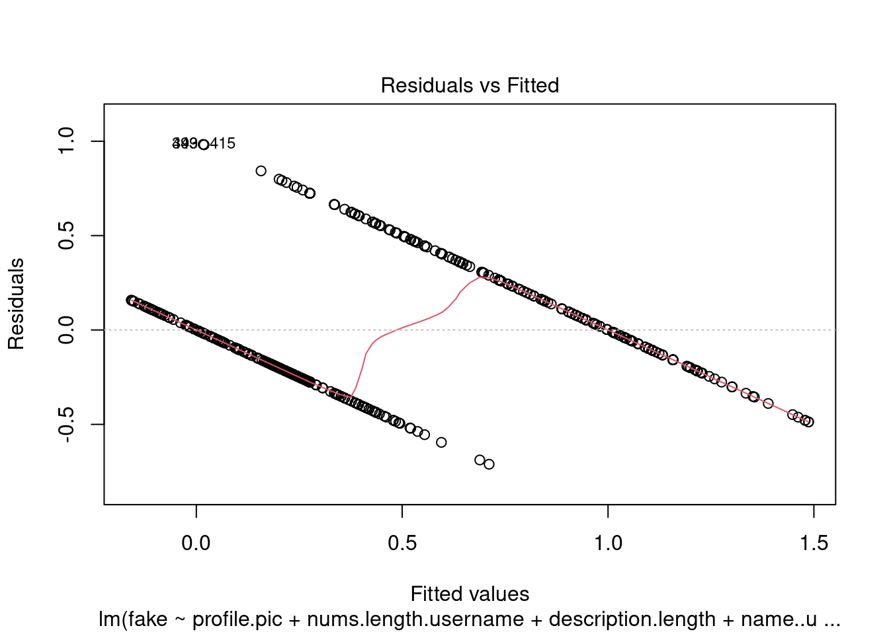
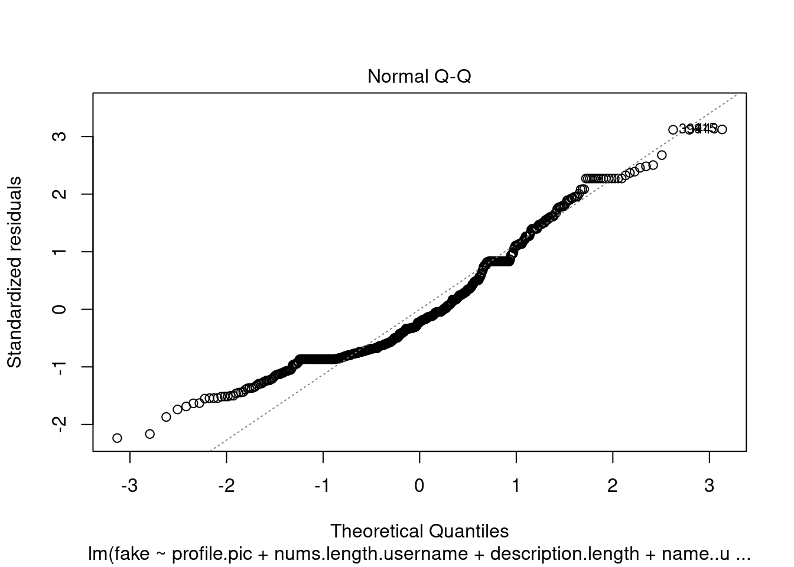
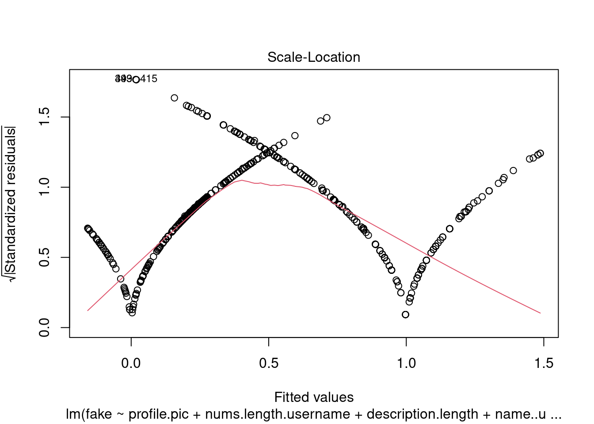
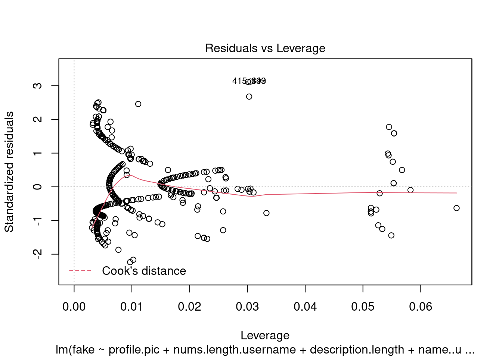
Para la primera y la tercera gráfica, no encontramos buenos resultados, pues lo ideal sería que los residuos se distribuyesen de forma aleatoria y en este caso encontramos una clara linealidad en ellos.
La segunda parece comportarse de forma esperada, pues vemos que los errores se distribuyen de forma normal.
Por último, en Residuals vs. Leverage, se observa que hay algunos con el 415 que podrían ser eliminados, pues se desvía demasiado de los demás puntos.
Mejorando el modelo
model4_upd <- update(model4, fake ~ . + I(description.length^2) + I(nums.length.username^2))
summary(model4_upd)
Call:
lm(formula = fake ~ profile.pic + nums.length.username + description.length +
name..username + external.URL + I(description.length^2) +
I(nums.length.username^2), data = data_reg)
Residuals:
Min 1Q Median 3Q Max
-0.66881 -0.20550 -0.05292 0.22207 0.93695
Coefficients:
Estimate Std. Error t value Pr(>|t|)
(Intercept) 7.141e-01 3.208e-02 22.260 < 2e-16 ***
profile.pic -3.995e-01 3.226e-02 -12.383 < 2e-16 ***
nums.length.username 1.394e+00 1.600e-01 8.717 < 2e-16 ***
description.length -8.163e-03 1.121e-03 -7.282 1.10e-12 ***
name..username 2.158e-01 7.014e-02 3.076 0.002196 **
external.URL -1.581e-01 4.559e-02 -3.467 0.000565 ***
I(description.length^2) 5.378e-05 8.612e-06 6.245 8.30e-10 ***
I(nums.length.username^2) -9.728e-01 2.341e-01 -4.156 3.74e-05 ***
---
Signif. codes: 0 '***' 0.001 '**' 0.01 '*' 0.05 '.' 0.1 ' ' 1
Residual standard error: 0.3048 on 568 degrees of freedom
Multiple R-squared: 0.6335, Adjusted R-squared: 0.629
F-statistic: 140.3 on 7 and 568 DF, p-value: < 2.2e-16Hemos conseguido subir ligeramente el valor de R-square, lo que significa que este modelo es algo mejor que el original.
Predicciones
Para finalizar, vamos a tomar el testing set para intentar predecir si una cuenta es falsa o no en función del último modelo que hemos obtenido.
test <- read.csv("test.csv")
# Predicción
probabilidades <- predict(model4_upd, test)
# Las probabilidades las transformo a binarias
predicciones_binarias <- ifelse(probabilidades > 0.5, 1, 0)
# Comparamos con la predicción el valor real
resultados <- data.frame(prediccion=predicciones_binarias, real=test$fake)
head(resultados, 10) prediccion real
1 1 0
2 0 0
3 0 0
4 0 0
5 0 0
6 0 0
7 0 0
8 0 0
9 0 0
10 0 0# Vemos cuántas de las predicciones coinciden con lo esperado
porcentaje_aciertos <- sum(predicciones_binarias==test$fake)/length(test$fake)*100
porcentaje_aciertos[1] 89.16667Como podemos ver, hemos obtenido un modelo que acierta casi el 90% de sus predicciones. De estos resultados concluimos que en este apartado hemos aprendido un método muy sencillo pero útil con el que se puede conseguir, de forma casi instantánea, una respuesta sobre si una cuenta de Instagram es falsa o no.